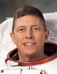

Lyndon B. Johnson Space Center
Houston, Texas 77058
|
National Aeronautics and Space Administration Lyndon B. Johnson Space Center Houston, Texas 77058 |
 |
Biographical Data |
||
Michael E. Fossum
NASA Astronaut
PERSONAL DATA: Born December 19, 1957, in Sioux Falls, South Dakota, and grew up in McAllen, Texas. Married to the former Melanie J. London. They have four children and one grandchild. He enjoys family activities, motorcycle riding and backpacking. Mike's main hobby is serving as Scoutmaster of a Boy Scout troop. His parents, Merlyn E. Fossum and Patricia A. Fossum, are deceased.
EDUCATION: McAllen High School, McAllen, Texas, 1976
B.S., Mechanical Engineering, Texas A&M University, 1980
M.S., Systems Engineering, Air Force Institute of Technology, 1981
M.S., Physical Science (Space Science), University of Houston - Clear Lake, 1997
SPECIAL HONORS: NASA Exceptional Service Medal and two NASA Spaceflight Medals. Scouting awards include Distinguished Eagle Scout, Silver Beaver and Vigil Member of the Order of the Arrow. Distinguished Military Graduate from Texas A&M University and Squadron Commander in the Corps of Cadets. Awarded the USAF Meritorious Service Medal with two Oak Leaf Clusters and various other service awards. Distinguished Graduate from the USAF Test Pilot School, Class 85A.
EXPERIENCE: Fossum received his commission in the U.S. Air Force from Texas A&M University in May 1980. After completing his graduate work at the Air Force Institute of Technology in 1981, he was detailed to NASA-Johnson Space Center, where he supported Space Shuttle flight operations, beginning with STS-3. He was selected for Air Force Test Pilot School at Edwards Air Force Base, California, where he graduated in 1985. After graduation, Fossum served at Edwards AFB as a Flight Test Engineer in the F-16 Test Squadron, working on a variety of airframe, avionics and armament development programs. From 1989 to 1992, he served as a Flight Test Manager at Detachment 3, Air Force Flight Test Center. Fossum resigned from active duty in 1992 to work for NASA and retired as a Colonel from the USAF Reserves in 2010. He has logged more than 1,800 hours in 35 different aircraft.
NASA EXPERIENCE: In January 1993, Fossum was employed by NASA as a Systems Engineer. His primary responsibilities were to evaluate the Russian Soyuz spacecraft for use as an emergency escape vehicle for the new space station. Later in 1993, Fossum was selected to represent the Flight Crew Operations Directorate in an extensive redesign of the International Space Station (ISS). After this, he continued work for the crew office and Mission Operations Directorate in the area of assembly operations. In 1996, Fossum supported the Astronaut Office as a Technical Assistant for Space Shuttle, supporting design and management reviews. In 1997, he served as a Flight Test Engineer on the X-38, a prototype crew escape vehicle for the ISS, which was under development in house by the Engineering Directorate at NASA-JSC and flight tested at NASA Dryden.
Selected by NASA as an Astronaut Candidate in June 1998, he reported for training in August 1998. Astronaut Candidate Training included orientation briefings and tours, numerous scientific and technical briefings, intensive instruction in Shuttle and ISS systems, physiological training and ground school to prepare for T-38 flight training as well as water and wilderness survival training. Fossum previously served as the Astronaut Office Lead for ISS flight software development. As a Capsule Communicator (CAPCOM) in Mission Control, Fossum supported several flights, including Lead CAPCOM for ISS Expedition 6. A veteran of three space flights, STS-121 in 2006, STS-124 in 2008 and Expedition 28/29 in 2011, Fossum has logged more than 194 days in space, including more than 48 hours of Extravehicular Activity (EVA) in seven spacewalks.
SPACE FLIGHT EXPERIENCE: STS-121 (July 4 to July 17, 2006), was a return-to-flight test mission and assembly flight to the ISS. During the 13-day flight, the crew of Space Shuttle Discovery tested new equipment and procedures that increase the safety of Space Shuttles and produced never-before-seen, high-resolution images of the Shuttle during and after its July 4th launch. The crew also performed maintenance on the ISS and delivered and transferred more than 28,000 pounds of supplies and equipment and a new Expedition 13 crewmember to the station. Fossum and Piers Sellers performed three EVAs to test the 50-ft robotic arm boom extension as a work platform. They removed and replaced a cable that provides power, command and data and video connections to the station's mobile transporter rail car. They also tested techniques for inspecting and repairing the reinforced carbon-carbon segments that protect the Shuttle's nose cone and leading edge of the wings. The STS-121 mission was accomplished in 202 orbits, traveling 5,293,923 miles in 12 days, 18 hours, 37 minutes and 54 seconds.
STS-124 Discovery (May 31 to June 14, 2008) was the 123rd Space Shuttle flight and the 26th Shuttle flight to the ISS. STS 124 launched from Kennedy Space Center, Florida, and docked with the ISS on June 2, 2008, to deliver the Japanese Experiment Module-Pressurized Module (JEM-PM) and the Japanese Remote Manipulator System. STS-124 Shuttle astronauts delivered the 37-foot (11-meter) Kibo lab, added its rooftop storage room and Fossum accumulated 20 hours and 32 minutes of EVA in three spacewalks required to maintain the station and to prime the new Japanese module's robotic arm for work during 9 days docked at the orbiting laboratory. STS-124 also delivered a new station crewmember, Expedition 17 Flight Engineer Greg Chamitoff. He replaced Expedition 16 Flight Engineer Garrett Reisman, who returned to Earth with the STS 124 crew. The STS-124 mission was completed in 218 orbits, traveling 5,735,643 miles in 13 days, 18 hours, 13 minutes and 7 seconds.
Fossum's third spaceflight began when he and Russian cosmonaut Sergei Volkov and Japanese astronaut Satoshi Furukawa launched to the ISS on June 7, 2011, from the Baikonur Cosmodrome in Kazakhstan. The trio arrived at the station on June 9. They spent 167 days in space and 165 days on the complex, during which NASA and its international partners celebrated the 11th anniversary of continuous residence and work aboard the station. Expedition 28 Commander Andrey Borisenko handed over station command duties to Fossum on September 14, 2011. Fossum's EVA during STS-135/ULF-7 brought him to seven EVAs in his career for a total of 48 hours, 32 minutes of EVA time, seventh on the all-time list for cumulative EVA time. Expedition 29 Commander Fossum, Flight Engineers Satoshi Furukawa of the Japan Aerospace Exploration Agency and Sergei Volkov of the Russian Federal Space Agency landed their Soyuz spacecraft in frigid conditions on the central steppe of Kazakhstan on November 21, 2011. Before leaving the station, Fossum handed over command to NASA Astronaut Dan Burbank. Expedition 28/29 was completed in 2,672 orbits, traveling 66,535,472 miles in 167 days.
JANUARY 2012